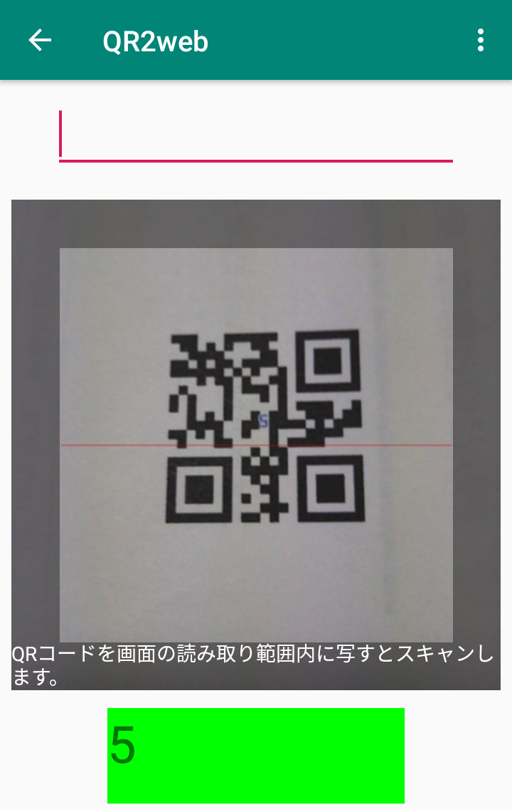
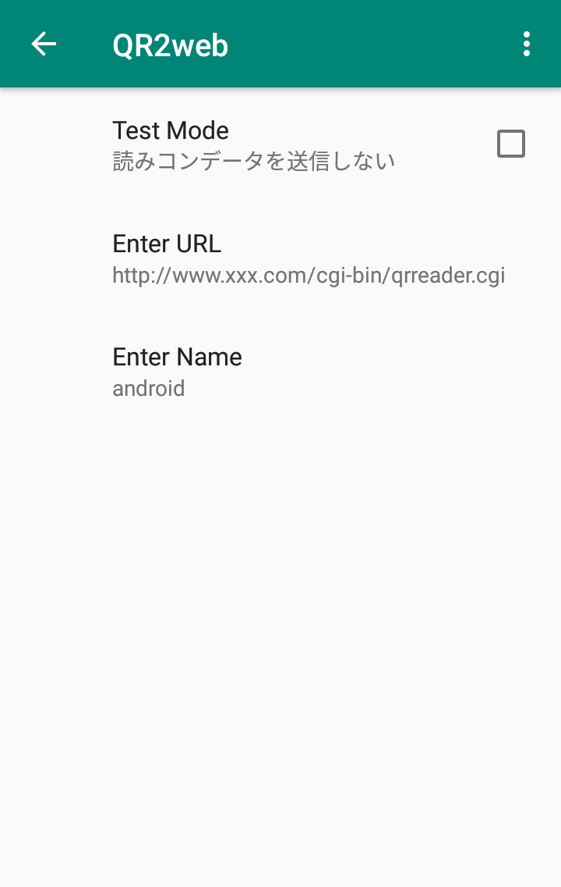
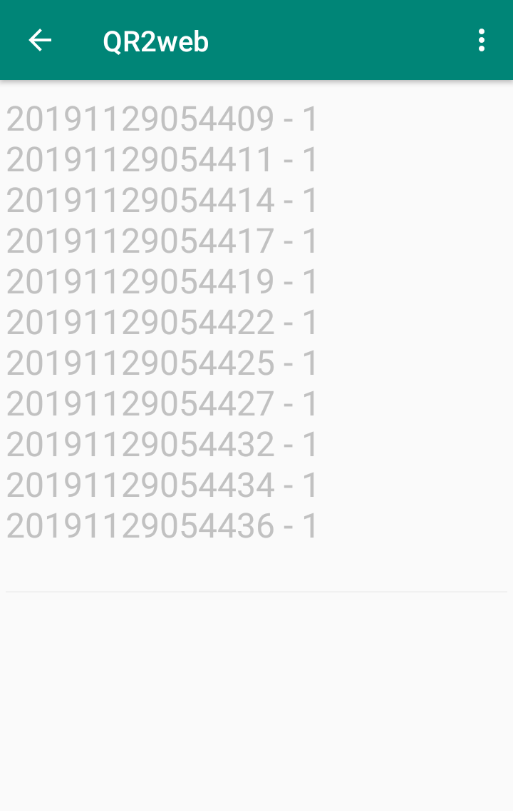
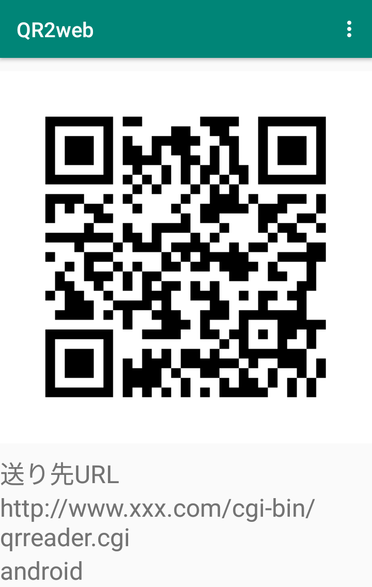

QRコードリーダです。 読み込んだコードはウェブサイトに送り、集計や各種計算はクラウド上で実行できるようにします。 ウェブへは以下の形式で送ります。 http://xxx.cgi?code=999&time=YYYYMMDDhhmmss&name=YYY. 送り先URLをQRコードで読み込むことができます。 テストモードは読み込んで表示するだけです。送信・保存はしません。 緊急用に直接入力フィールドを追加しました。 マラソン大会のタイム計測を目的に作成しました。 他の方にコピーできるように、URLのQRコードを表示できます。 Credit App uses icons designed from "Flaticon", "ICOOON MONO".サンプルデータ(perl script)
|  |  |  |  |